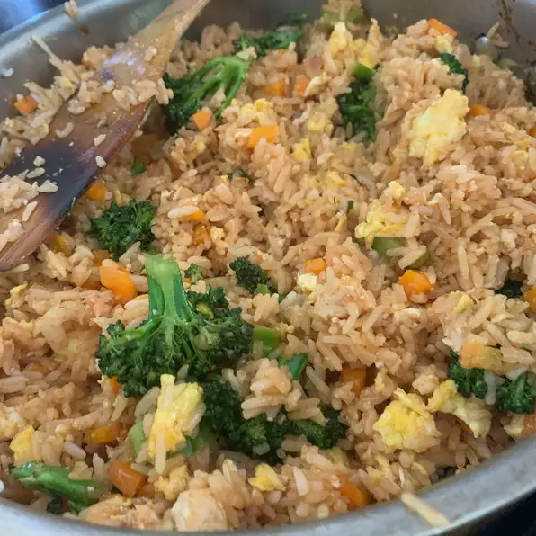

Fried Rice

Description
Here is a recipe for thai fried rice. It is actually really good, and a great way to use leftover rice!
Ingredients:
- 6 slices bacon, sliced crosswise into 1/2-inch pieces
- 2 cloves garlic, minced
- 1 onion, finely chopped
- 1 large tomato, cubed
- ½ cup chopped fresh pineapple
- 5 cups cooked jasmine rice, cooled
- 2 tablespoons ketchup
- 2 tablespoons light soy sauce
- 1 tablespoon white sugar
- ¼ teaspoon freshly ground white pepper
- 3 eggs, beaten
Steps!
- Heat a large skillet or wok over medium heat and cook bacon until browned and crisp, about 5 minutes. Drain, reserving bacon grease in a bowl. Spoon 2 tablespoons grease back into the skillet.
- Increase heat to medium-high and cook garlic until fragrant, about 30 seconds. Add onion and cook, stirring often, until softened, 2 to 3 minutes. Stir in tomato and pineapple and stir-fry until warmed through, about 2 minutes.
- Increase heat to high and add 1 tablespoon bacon grease. Add rice and stir-fry, breaking up with a spatula so it gets coated well with bacon grease. Cook for about 3 minutes. Season with ketchup, soy sauce, sugar, and white pepper.
- Move rice mixture to one side of the skillet or wok and pour beaten eggs onto the empty side. Stir-fry until eggs are almost set, 2 to 3 minutes. Mix eggs with rice mixture. Fold in bacon bits. Serve with cucumber, green onions, cilantro, lemon wedges, and chile peppers.
Acknowledgements
This whole website is just HTML practice, here is a link to the actual recipe.